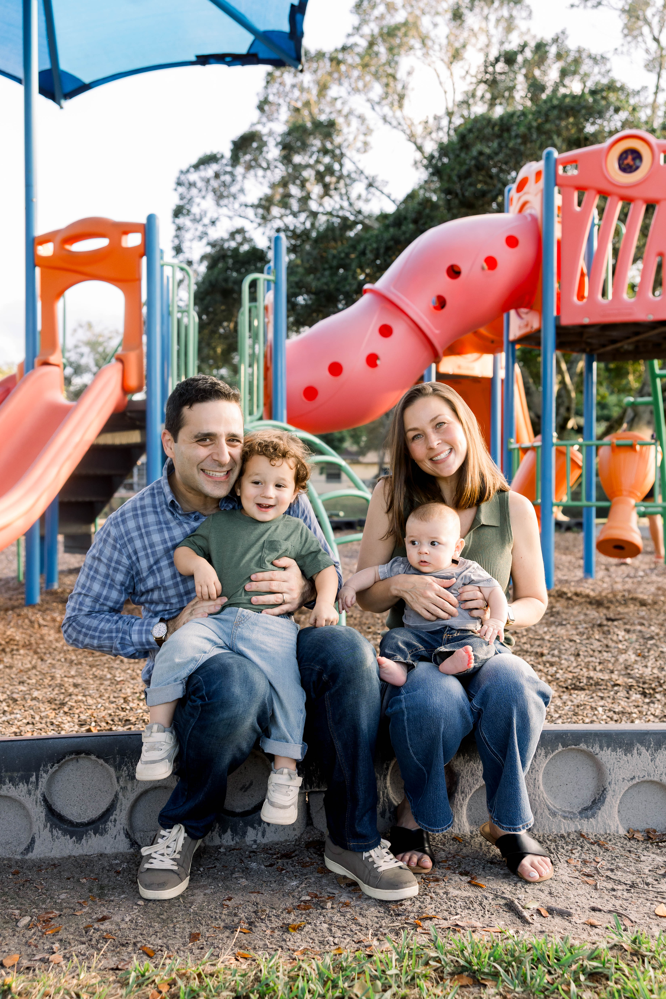

A clear vision for Cooper City's future — focused on what matters most to families in District 3.
Cooper City has always been a great place to raise a family — and I intend to keep it that way. As a dad myself, I know exactly what families need: safe parks where kids can play, excellent schools they're proud to attend, and neighborhoods where neighbors still know each other's names.
I'll advocate for maintaining and expanding our parks and recreation programs, ensuring Cooper City remains competitive for families choosing where to plant roots in South Florida. I'll also work to preserve the single-family character of our neighborhoods and resist overdevelopment that threatens the quality of life our residents cherish.
Our children are our future, and every policy decision I make as Commissioner will be viewed through the lens of: how does this make Cooper City better for the families who live here?
One of the greatest gifts Cooper City gives its residents is a genuine sense of safety. Our city consistently ranks among the safest communities in Broward County — and I will work tirelessly to keep it that way.
I'm committed to ensuring our police and fire departments have the resources, training, and support they need to serve our community with excellence. I believe in building strong relationships between our public safety officers and the neighborhoods they serve, creating a culture of trust and responsiveness.
I'll also be a vocal advocate for smart, evidence-based approaches to emergency preparedness — so that Cooper City families can count on their city during hurricanes, flooding, and other emergencies that South Florida communities regularly face.

Great cities don't stay great by accident — they require consistent investment in the infrastructure that makes daily life work. Roads, stormwater systems, utilities, and public facilities are the backbone of our community, and they need leaders who take a long view.
As Commissioner, I'll push for strategic, fiscally responsible infrastructure investment that addresses today's needs without burdening tomorrow's taxpayers. I'll demand transparency and accountability in how we spend public dollars, and I'll make sure residents have a clear voice in what gets built, repaired, and prioritized.
I also believe smart infrastructure means protecting our environment and preparing for the realities of South Florida's climate — including sea-level rise, extreme heat, and increased storm intensity. Cooper City can lead the way in resilient, sustainable community planning.

These priorities aren't just campaign talking points — they're the issues I deal with as a Cooper City parent and resident every single day. I'm committed to fighting for them in every Commission meeting, every budget discussion, and every vote.